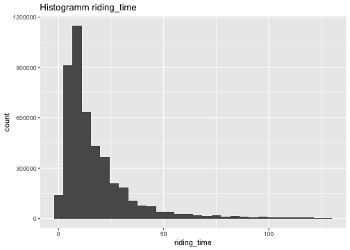

Detailed Report
Load files and packages:
library(dplyr)
library(ggplot2)
library(tidyverse)
library(geosphere)
data_all <- list.files(path = "/Users/jonaslenz/Case Study Cyclistic/Data Sets Used", pattern = "May2021_to_April2022_Cyclist_Data.csv", full.names = TRUE) %>%
lapply(read_csv) %>%
bind_rows
data_all_before_mapulation <- data_all1. Data Cleaning with R
data_all <- data_all[order(data_all$started_at),]
glimpse(data_all)## Rows: 5,723,532
## Columns: 14
## $ ...1 <dbl> 39495, 273781, 34832, 16811, 131422, 9916, 51657, 2…
## $ ride_id <chr> "0DA46DD62F111D09", "FF009F812ADAFB3E", "623C22F8DE…
## $ rideable_type <chr> "electric_bike", "classic_bike", "electric_bike", "…
## $ started_at <dttm> 2021-04-01 00:03:18, 2021-04-01 00:03:47, 2021-04-…
## $ ended_at <dttm> 2021-04-01 00:30:59, 2021-04-01 00:23:26, 2021-04-…
## $ start_station_name <chr> "Western Ave & Howard St", "LaSalle St & Illinois S…
## $ start_station_id <chr> "527", "13430", NA, "TA1307000131", "KA1504000133",…
## $ end_station_name <chr> "Campbell Ave & Fullerton Ave", "Wentworth Ave & 24…
## $ end_station_id <chr> "15648", "TA1308000026", NA, "13045", "TA1309000025…
## $ start_lat <dbl> 42.01888, 41.89076, 41.72000, 41.88688, 41.90236, 4…
## $ start_lng <dbl> -87.69008, -87.63170, -87.62000, -87.62603, -87.627…
## $ end_lat <dbl> 41.92465, 41.85008, 41.70000, 41.89399, 41.94366, 4…
## $ end_lng <dbl> -87.68929, -87.63214, -87.65000, -87.62932, -87.648…
## $ member_casual <chr> "member", "member", "member", "member", "member", "…- Deleting NA entries:
data_all <- drop_na(data_all)
glimpse(data_all)## Rows: 4,641,395
## Columns: 14
## $ ...1 <dbl> 39495, 273781, 16811, 131422, 9916, 51657, 251943, …
## $ ride_id <chr> "0DA46DD62F111D09", "FF009F812ADAFB3E", "8089677A94…
## $ rideable_type <chr> "electric_bike", "classic_bike", "classic_bike", "e…
## $ started_at <dttm> 2021-04-01 00:03:18, 2021-04-01 00:03:47, 2021-04-…
## $ ended_at <dttm> 2021-04-01 00:30:59, 2021-04-01 00:23:26, 2021-04-…
## $ start_station_name <chr> "Western Ave & Howard St", "LaSalle St & Illinois S…
## $ start_station_id <chr> "527", "13430", "TA1307000131", "KA1504000133", "13…
## $ end_station_name <chr> "Campbell Ave & Fullerton Ave", "Wentworth Ave & 24…
## $ end_station_id <chr> "15648", "TA1308000026", "13045", "TA1309000025", "…
## $ start_lat <dbl> 42.01888, 41.89076, 41.88688, 41.90236, 41.97835, 4…
## $ start_lng <dbl> -87.69008, -87.63170, -87.62603, -87.62783, -87.659…
## $ end_lat <dbl> 41.92465, 41.85008, 41.89399, 41.94366, 41.96797, 4…
## $ end_lng <dbl> -87.68929, -87.63214, -87.62932, -87.64884, -87.650…
## $ member_casual <chr> "member", "member", "member", "member", "member", "…Dropped Rows: 1,082,137 = 5,723,532 - 4,641,395
count(data_all, vars = member_casual)## # A tibble: 2 × 2
## vars n
## <chr> <int>
## 1 casual 2044339
## 2 member 2597056count(data_all_before_mapulation, vars = member_casual)## # A tibble: 2 × 2
## vars n
## <chr> <int>
## 1 casual 2546542
## 2 member 3176990Compared casuals are nearly riding as much as Members in Total. The NA in the data seem random judging from the relative equality in reduction of members and casuals from the Data Frame. Therefore this can be assumed as Random noise and excluded.
2. Analysis with R
2.1 Bike Types
count(filter(data_all, rideable_type=="classic_bike" ), vars = member_casual)## # A tibble: 2 × 2
## vars n
## <chr> <int>
## 1 casual 1252609
## 2 member 1989380count(filter(data_all, rideable_type=="electric_bike" ), vars = member_casual)## # A tibble: 2 × 2
## vars n
## <chr> <int>
## 1 casual 488206
## 2 member 607676count(filter(data_all, rideable_type=="docked_bike" ), vars = member_casual)## # A tibble: 1 × 2
## vars n
## <chr> <int>
## 1 casual 303524- 38% of the classic_bikes are used by casual members
- 44.55% of the electric_bikes are used by casual members
- The docked_bikes are only used by casual members
2.2 Users per Location ID
2.2.1 Highest Count of riders per type:
We use this in order to get a glimpse of what stations might be most important for the Analysis.
count_station_id_member <- count(group_by(data_all,start_station_id), vars=member_casual)
count_station_id_member <- count_station_id_member[order(count_station_id_member$n, decreasing = TRUE), ]
head(count_station_id_member)## # A tibble: 6 × 3
## # Groups: start_station_id [6]
## start_station_id vars n
## <chr> <chr> <int>
## 1 13022 casual 65428
## 2 13300 casual 34230
## 3 13008 casual 31875
## 4 LF-005 casual 28617
## 5 13042 casual 28543
## 6 KA1503000043 member 241862.2.2 Highest Count of riders in Total:
count_start_station_id <- count(group_by(data_all,start_station_id), vars=start_station_id)
count_start_station_id <- count_start_station_id[order(count_start_station_id$n, decreasing = TRUE), ]
head(count_start_station_id)## # A tibble: 6 × 3
## # Groups: start_station_id [6]
## start_station_id vars n
## <chr> <chr> <int>
## 1 13022 13022 81546
## 2 LF-005 LF-005 46327
## 3 13300 13300 44181
## 4 13042 13042 42627
## 5 TA1308000050 TA1308000050 41982
## 6 13008 13008 404662.2.3 Exlude low Casual Stations
Next steps:
Merge the 2 Tables and get the total number in order to evaluate the % of casual members per starting station. We do this because we want to know which stations are most successful for acquiring members so we can dive deeper into what reasons are behind that.
By knowing which stations have the highest rate of casual riders we get to know where our approach to acquire members is most successful of course in relation to the number of total members. That is why all stations below the 75 percentile casual riders are dropped in order to focus on the most important ones.
total_station_casual <- merge(count_start_station_id, count_station_id_member, by.x = 1, by.y = 1, all.x = TRUE)
total_station_casual <- total_station_casual[-c(2)] %>%
rename(riders_total = n.x,
member_casual = vars.y,
total_casual_member = n.y)%>%
mutate(perc_member_casual=(total_casual_member/riders_total*100))%>%
arrange(. , -perc_member_casual)%>%
subset(.,member_casual == "casual")
mean(total_station_casual$total_casual_member)## [1] 2416.476 quantile(total_station_casual$total_casual_member)## 0% 25% 50% 75% 100%
## 1.00 73.00 613.00 3150.75 65428.00total_station_casual <-subset(total_station_casual, total_casual_member >= 3150.75)
head(total_station_casual)%>%
select(., start_station_id, riders_total, total_casual_member, perc_member_casual)## start_station_id riders_total total_casual_member perc_member_casual
## 109 15541 13623 11674 85.69331
## 143 15544 27235 22476 82.52616
## 156 13029 8428 6824 80.96820
## 163 13022 81546 65428 80.23447
## 178 13008 40466 31875 78.76983
## 200 13300 44181 34230 77.47674- The dataset now contains 212 Stations, which are most important for Cyclistic to Act on, in Descending order by the highest proportion of casual riders.
Check if we didnt exclude too much Data:
The Dataframe contains:
sum(total_station_casual$total_casual_member)## [1] 16452911,645,291 out of 2,044,339 casuals from 212 biggest stations of casual riders.
2.2.4 Exlude low Membbers Stations
- To get to know Differences between Members and Casuals we reverse the Task and do the Same from above to Members So to Expand on the above we reverse the task and get the Following result:
total_station_member <- merge(count_start_station_id, count_station_id_member, by.x = 1, by.y = 1, all.x = TRUE)
total_station_member <- total_station_member[-c(2)] %>%
rename(riders_total = n.x,
member_casual = vars.y,
total_casual_member = n.y)%>%
mutate(perc_member_casual=(total_casual_member/riders_total*100))%>%
arrange(. , -perc_member_casual)%>%
subset(.,member_casual == "member")
mean(total_station_member$total_casual_member)## [1] 3117.714quantile(total_station_member$total_casual_member)## 0% 25% 50% 75% 100%
## 1 26 821 5211 24186total_station_member <-subset(total_station_member, total_casual_member >= 5211)
head(total_station_member)%>%
select(., start_station_id, riders_total, total_casual_member, perc_member_casual)## start_station_id riders_total total_casual_member perc_member_casual
## 111 13216 9831 8408 85.52538
## 117 13285 6770 5762 85.11078
## 118 TA1309000064 9930 8436 84.95468
## 120 13332 17099 14511 84.86461
## 140 TA1307000130 10852 9004 82.97088
## 147 TA1307000121 10467 8552 81.70440The next Step is to evaluate what role riding time plays in the context of casual_riders and how it differs from members.
2.3 Time
2.3.1 Mean Riding-Time per rider
time_data_all <- data_all%>%
mutate(riding_time = round(as.vector(ended_at - started_at)/60)) %>%
arrange( . ,-riding_time)
#Select View
head(arrange(time_data_all, riding_time)) %>%
select(., start_station_id, member_casual, riding_time)## # A tibble: 6 × 3
## start_station_id member_casual riding_time
## <chr> <chr> <dbl>
## 1 13128 casual -56
## 2 13191 member -54
## 3 13243 member -54
## 4 TA1309000023 casual -53
## 5 13191 casual -53
## 6 RN- casual -51#Select View
head(time_data_all) %>%
select(., start_station_id, member_casual, riding_time)## # A tibble: 6 × 3
## start_station_id member_casual riding_time
## <chr> <chr> <dbl>
## 1 TA1305000011 casual 55944
## 2 13022 casual 55692
## 3 TA1305000035 casual 53922
## 4 KA1503000012 casual 52701
## 5 13085 casual 49107
## 6 TA1307000131 casual 47777mean(time_data_all$riding_time)## [1] 21.35558ggplot(time_data_all, aes(x = riding_time)) +
geom_boxplot(notch=TRUE)
On average riders using the Cyclist product are cycling ca. 21 minutes.
The Highest and Lowest Values seem to be non significant outliers and we cut them as they do not represent our data. The Min Values especially below zero do not make any sense, but also 1 second riding_time for example is not anything we can expand upon.
There are a lot of outliers as confirmed by the Boxplot above.
2.3.2 Cut 1% of the bottom and Top
quantile(time_data_all$riding_time, c(.99))## 99%
## 129quantile(time_data_all$riding_time, c(.01))## 1%
## 1mean(time_data_all$riding_time)## [1] 21.35558time_all <- subset(time_data_all, riding_time >= 1 & riding_time <= 129)
head(time_all)## # A tibble: 6 × 15
## ...1 ride_id rideable_type started_at ended_at
## <dbl> <chr> <chr> <dttm> <dttm>
## 1 292649 97192AE375753B66 classic_bike 2021-04-02 21:42:12 2021-04-02 23:50:50
## 2 87098 FB83A0F1CA74A5C4 docked_bike 2021-04-03 03:15:46 2021-04-03 05:24:33
## 3 300577 3A7B43070C572A1A docked_bike 2021-04-03 12:45:26 2021-04-03 14:54:10
## 4 310181 0B00938460D56814 docked_bike 2021-04-03 12:46:39 2021-04-03 14:55:38
## 5 266414 9210C254AF169781 classic_bike 2021-04-03 13:47:15 2021-04-03 15:56:27
## 6 282329 7EEE94AFB81836C6 classic_bike 2021-04-03 13:47:44 2021-04-03 15:56:17
## # … with 10 more variables: start_station_name <chr>, start_station_id <chr>,
## # end_station_name <chr>, end_station_id <chr>, start_lat <dbl>,
## # start_lng <dbl>, end_lat <dbl>, end_lng <dbl>, member_casual <chr>,
## # riding_time <dbl>mean(time_all$riding_time)## [1] 17.46532ggplot(time_all, aes(x = riding_time)) +
geom_boxplot() +
ggtitle("Boxplot Riding_time")
ggplot(time_all, aes(x = riding_time)) +
geom_histogram() +
ggtitle("Histogramm riding_time")
By removing outliers the Average dropped by ca. 4 Minutes.
Above 40 Minutes there are still many outliers.
Histogramm: the most data points are distributed on the left side, but the mean is increased by many smaller data points at the right side.
2.3.3 Mean time Casual riders
- Now we aggregate the data by only displaying casuals first and then members.
time_all_casuals <- subset(time_all, member_casual == "casual")
mean(time_all_casuals$riding_time)## [1] 23.6062ggplot(time_all_casuals, aes(x = riding_time)) +
geom_boxplot() +
ggtitle("Boxplot Riding_time per Casual")
ggplot(time_all_casuals, aes(x = riding_time)) +
geom_histogram(binwidth = 1) +
ggtitle("Histogramm Riding_time per Casual")
- Casual riders have a really high riding_time. But the most important part is the riding time 1 to 50 minutes contains most of the casual riders.
- the mean riding time of casual riders is ca. 23 Minutes
time_all_member <- subset(time_all, member_casual == "member")
time_all_member## # A tibble: 2,567,475 × 15
## ...1 ride_id rideable_type started_at ended_at
## <dbl> <chr> <chr> <dttm> <dttm>
## 1 282329 7EEE94AFB81836C6 classic_bike 2021-04-03 13:47:44 2021-04-03 15:56:17
## 2 198186 F8A46808323A03DF classic_bike 2021-04-07 16:51:32 2021-04-07 19:00:14
## 3 148789 67AB06F93FBF96AE electric_bike 2021-04-14 17:37:21 2021-04-14 19:45:57
## 4 224826 D065049F0A03B4E7 classic_bike 2021-04-17 13:29:45 2021-04-17 15:38:41
## 5 731678 2ABCCC945F5A95FD classic_bike 2021-05-02 10:27:08 2021-05-02 12:36:22
## 6 460696 3679F888FB6C279D electric_bike 2021-05-15 22:17:52 2021-05-16 00:26:46
## 7 506073 7C98DB6ED149F2BD classic_bike 2021-05-18 09:33:17 2021-05-18 11:42:29
## 8 460616 2406203A73332112 classic_bike 2021-05-22 10:49:51 2021-05-22 12:58:57
## 9 513928 0DF812A7F84C04D4 classic_bike 2021-05-22 12:22:29 2021-05-22 14:31:45
## 10 569454 51E4B5017A451FC1 electric_bike 2021-05-28 22:09:03 2021-05-29 00:17:35
## # … with 2,567,465 more rows, and 10 more variables: start_station_name <chr>,
## # start_station_id <chr>, end_station_name <chr>, end_station_id <chr>,
## # start_lat <dbl>, start_lng <dbl>, end_lat <dbl>, end_lng <dbl>,
## # member_casual <chr>, riding_time <dbl>mean(time_all_member$riding_time)## [1] 12.70632ggplot(time_all_member, aes(x = riding_time)) +
geom_boxplot() +
ggtitle("Boxplot Riding_time per member")
ggplot(time_all_member, aes(x = riding_time)) +
geom_histogram(binwidth = 1) +
ggtitle("Histogramm Riding_time per member")
- the mean riding time of members is ca. 13 Minutes
- The mean riding_time is higher for Casuals than members by more than 10 minutes.
- The distribution of riding_time is much more Narrow for members. Confirmed by the Standard Deviation:
sd(time_all_casuals$riding_time) ## [1] 21.99483sd(time_all_member$riding_time)## [1] 10.66348- Cyclistic should evaluate what makes riders who ride for a mid to long time not use the membership.
2.3.4 Regression: Casuals impact on riding time
Trend of how the % of Casual riders impacts the average riding_time per station
we take the 212 Stations which have the most casual riders in Percent from Chapter 2.2.3 :
most_casual_riders <- total_station_casual$start_station_id[1:212]
most_casual_perc <- total_station_casual$perc_member_casual[1:212]
mean_casual_station <- data.frame(nrows = 212)
mean_casual_station <- cbind(mean_casual_station,start_station_id = c(most_casual_riders))
mean_casual_station <- cbind(mean_casual_station,perc_casual = c(most_casual_perc))
mean_list <- c()
for (i in most_casual_riders){
mean_list <- append(mean_list, mean(subset(time_all, start_station_id == i)$riding_time))
}
mean_casual_station <- cbind(mean_casual_station, mean_riding_time = c(mean_list))
cor(mean_casual_station$mean_riding_time, mean_casual_station$perc_casual)## [1] 0.814872head(mean_casual_station)## nrows start_station_id perc_casual mean_riding_time
## 1 212 15541 85.69331 35.29438
## 2 212 15544 82.52616 29.18788
## 3 212 13029 80.96820 28.87227
## 4 212 13022 80.23447 31.56451
## 5 212 13008 78.76983 32.55147
## 6 212 13300 77.47674 32.66521summary(lm(perc_casual~mean_riding_time,data=mean_casual_station))##
## Call:
## lm(formula = perc_casual ~ mean_riding_time, data = mean_casual_station)
##
## Residuals:
## Min 1Q Median 3Q Max
## -23.5625 -3.3720 0.0343 3.8971 18.7569
##
## Coefficients:
## Estimate Std. Error t value Pr(>|t|)
## (Intercept) 16.09344 1.45204 11.08 <2e-16 ***
## mean_riding_time 1.63341 0.08018 20.37 <2e-16 ***
## ---
## Signif. codes: 0 '***' 0.001 '**' 0.01 '*' 0.05 '.' 0.1 ' ' 1
##
## Residual standard error: 6.374 on 210 degrees of freedom
## Multiple R-squared: 0.664, Adjusted R-squared: 0.6624
## F-statistic: 415 on 1 and 210 DF, p-value: < 2.2e-16A Linear Model like above shows the Positive significant influence of the percentage of casuals on to the mean riding time. It also describes R^2 = 66.4% of the Riding_Time variable.
Visualization:
trend_casual_time <-ggplot(mean_casual_station, aes(x = perc_casual, y = mean_riding_time)) +
geom_point() +
geom_smooth( , se=FALSE)
trend_casual_time <- trend_casual_time + expand_limits(x = 0, y = 0)
trend_casual_time<- trend_casual_time + scale_x_continuous(expand = c(0, 0)) + scale_y_continuous(expand = c(0, 0))
trend_casual_time
2.4 Distance
2.4.1 Distance and Time
We can not examine a distance if the end station does equal the starting station so we rule these points out.
Our assumption for this chapter has to be that the traveled distance to the end point is a straight line which is not realistic (on average the result should still show a certain trend).
First we examine the time it takes for a casual to ride a certain distance in comparison to a member. DF from chapter 2.3.2
time_distance <- time_all %>%
subset(., start_station_id != end_station_id)
time_distance$distance_m <- round(distHaversine(time_distance[,10:11], time_distance[,12:13]))
time_distance$distance_per_minute <- (time_distance$distance_m / time_distance$riding_time)
head(time_distance$distance_per_minute)## [1] 4.310078 1.379845 2.100775 2.100775 21.093023 3.558140head(time_distance$distance_m)## [1] 556 178 271 271 2721 459subset_casual <-subset(time_distance, member_casual == "casual")
mean(subset_casual$distance_m)## [1] 1602.591subset_member <- subset(time_distance, member_casual == "member")
mean(subset_member$distance_m)## [1] 1458.779mean(subset_casual$distance_m)/mean(subset_member$distance_m)*100## [1] 109.8584- Casuals ride 9% more on an average ride.
2.4.2 Distance/Time Casuals vs. Members
time_distance_casual <- subset(time_distance, member_casual == "casual")
casual <- mean(time_distance_casual$distance_per_minute)
ggplot(time_distance_casual, aes(distance_per_minute)) +
geom_boxplot() +
ggtitle("Casuals")
ggplot(time_distance_casual, aes(x = distance_per_minute)) +
geom_histogram(binwidth = 1) +
ggtitle("Casuals")
time_distance_member <- subset(time_distance, member_casual == "member")
member <- mean(time_distance_member$distance_per_minute)
ggplot(time_distance_member, aes(x = distance_per_minute)) +
geom_boxplot() +
ggtitle("Members")
ggplot(time_distance_member, aes(x = distance_per_minute)) +
geom_histogram(binwidth = 1) +
ggtitle("Members")
(member / casual) * 100## [1] 131.4174- Members ride 31.42% faster per minute on average.
- Are they sportier ?
2.4.2.1 Are Members Sportier than Casual Riders
Before we take a quick Conclusion we want to find out what influenced the location has on the traveled distance since we assumed a very simplistic model here. Using the DF from the Capitel Time.
We compare the averages of the 212 stations we explored before for each member and casuals to avoid bias by location (ruling out differences in traffic and routes).
#creating empty vectors
mean_list_distance_casual <- c()
mean_list_distance_member <- c()
mean_list_distance <- c()
# loop to build the means under each circumstance for distance/minute
for (i in most_casual_riders){
mean_list_distance_casual <- append(mean_list_distance_casual, mean(subset(time_distance_casual, start_station_id == i)$distance_per_minute))
mean_list_distance_member <- append(mean_list_distance_member, mean(subset(time_distance_member, start_station_id == i)$distance_per_minute))
mean_list_distance <- append(mean_list_distance, mean(subset(time_distance, start_station_id == i)$distance_per_minute))
}
mean(mean_list_distance_member / mean_list_distance_casual)*100## [1] 132.4597mean_casual_station <- cbind(mean_casual_station, mean_distance_minute = c(mean_list_distance))
summary(lm(perc_casual~mean_distance_minute + mean_riding_time, data=mean_casual_station))##
## Call:
## lm(formula = perc_casual ~ mean_distance_minute + mean_riding_time,
## data = mean_casual_station)
##
## Residuals:
## Min 1Q Median 3Q Max
## -23.4215 -3.3233 0.0786 3.6350 18.9525
##
## Coefficients:
## Estimate Std. Error t value Pr(>|t|)
## (Intercept) 14.690509 3.428868 4.284 2.8e-05 ***
## mean_distance_minute 0.007823 0.017314 0.452 0.652
## mean_riding_time 1.660919 0.100790 16.479 < 2e-16 ***
## ---
## Signif. codes: 0 '***' 0.001 '**' 0.01 '*' 0.05 '.' 0.1 ' ' 1
##
## Residual standard error: 6.387 on 209 degrees of freedom
## Multiple R-squared: 0.6643, Adjusted R-squared: 0.6611
## F-statistic: 206.8 on 2 and 209 DF, p-value: < 2.2e-16summary(lm(mean_distance_minute ~ mean_riding_time, data=mean_casual_station))##
## Call:
## lm(formula = mean_distance_minute ~ mean_riding_time, data = mean_casual_station)
##
## Residuals:
## Min 1Q Median 3Q Max
## -98.468 -16.827 -4.711 16.505 66.936
##
## Coefficients:
## Estimate Std. Error t value Pr(>|t|)
## (Intercept) 179.3349 5.7984 30.93 <2e-16 ***
## mean_riding_time -3.5159 0.3202 -10.98 <2e-16 ***
## ---
## Signif. codes: 0 '***' 0.001 '**' 0.01 '*' 0.05 '.' 0.1 ' ' 1
##
## Residual standard error: 25.45 on 210 degrees of freedom
## Multiple R-squared: 0.3648, Adjusted R-squared: 0.3618
## F-statistic: 120.6 on 1 and 210 DF, p-value: < 2.2e-16The Mean for each station suggests that the members ride on Average 32.45% faster than casual riders, which suggests that the starting station has no significant influence on the Speed. But the Linear model suggests that the distance_minute is not significant when we add it to the linear model from chapter 3 which is why the linear model does not explain more with adding the variable of mean_distance_time (R^2 = 66.11%). That is what the p value 0.652 > 0.05 suggests.
Correlation: distance/minute <-> %casuals/station
trend_casual_distance <- ggplot(mean_casual_station, aes(x = mean_riding_time, y =mean_distance_minute )) +
geom_point() +
geom_smooth(, se=FALSE) +
ggtitle("Regression mean_riding_time | mean_distance")
trend_casual_distance <- trend_casual_distance + expand_limits(x = 0, y = 0)
trend_casual_distance <- trend_casual_distance + scale_x_continuous(expand = c(0, 0)) + scale_y_continuous(expand = c(0, 0))
trend_casual_distance
trend_casual_distance <-ggplot(mean_casual_station, aes(x = perc_casual, y = mean_distance_minute)) +
geom_point() +
geom_smooth(, se=FALSE) +
ggtitle("Regression perc_casual | mean_distance")
trend_casual_distance <- trend_casual_distance + expand_limits(x = 0, y = 0)
trend_casual_distance <- trend_casual_distance + scale_x_continuous(expand = c(0, 0)) + scale_y_continuous(expand = c(0, 0))
head(trend_casual_distance)## $data
## nrows start_station_id perc_casual mean_riding_time mean_distance_minute
## 1 212 15541 85.69331 35.294379 43.69193
## 2 212 15544 82.52616 29.187876 51.70016
## 3 212 13029 80.96820 28.872268 51.39773
## 4 212 13022 80.23447 31.564505 87.24440
## 5 212 13008 78.76983 32.551469 51.60355
## 6 212 13300 77.47674 32.665211 51.43519
## 7 212 TA1305000004 74.03517 27.284134 55.86450
## 8 212 KA1503000064 73.35932 30.346475 64.67798
## 9 212 623 68.75369 27.588363 52.06138
## 10 212 13124 68.20375 31.321818 73.61666
## 11 212 13042 66.95991 29.824870 79.29130
## 12 212 TA1309000002 66.93172 27.289945 57.96017
## 13 212 13431 65.27417 29.587650 91.92725
## 14 212 KA1503000074 64.55037 36.245705 96.79347
## 15 212 TA1305000010 64.49627 26.182313 63.68834
## 16 212 TA1307000131 62.12943 23.962248 81.93056
## 17 212 LF-005 61.77175 23.657096 96.74136
## 18 212 LP- 60.93279 25.894896 79.59373
## 19 212 13075 59.81506 24.247409 91.80122
## 20 212 TA1308000012 59.36634 28.609379 95.23568
## 21 212 13034 57.86778 23.734795 87.03535
## 22 212 TA1308000001 57.56916 25.802280 98.22325
## 23 212 13085 57.29866 20.398757 169.91410
## 24 212 TA1306000029 57.26877 25.463146 118.83363
## 25 212 TA1307000048 56.88011 34.213936 83.25938
## 26 212 TA1306000013 55.58499 22.355812 117.56455
## 27 212 632 55.29594 15.370916 115.24996
## 28 212 TA1305000011 55.29379 22.116042 83.46740
## 29 212 SL-005 54.73335 23.818850 67.58713
## 30 212 13001 54.32823 23.382343 94.48742
## 31 212 13036 53.93343 22.141608 88.53915
## 32 212 SL-007 52.93385 22.265094 83.23713
## 33 212 TA1307000126 52.83168 16.913188 109.04161
## 34 212 TA1307000127 52.39142 14.816598 123.63094
## 35 212 13128 51.63423 19.206578 97.16040
## 36 212 13084 51.47232 15.791796 175.03384
## 37 212 KA1503000059 51.46822 25.605854 106.75054
## 38 212 TA1309000049 51.30664 23.006088 95.41119
## 39 212 13179 50.79096 16.824928 117.46918
## 40 212 TA1307000113 50.47336 12.612151 157.78074
## 41 212 TA1305000034 50.35167 15.220192 163.90492
## 42 212 TA1309000039 49.95141 21.887050 90.19400
## 43 212 TA1308000009 49.71410 26.758810 151.09129
## 44 212 13146 49.07003 17.066258 113.18690
## 45 212 13430 48.89706 16.448221 108.10194
## 46 212 TA1308000019 48.74675 13.906995 136.06099
## 47 212 TA1305000041 48.70474 16.381606 139.18629
## 48 212 13229 48.43600 13.419866 142.97331
## 49 212 13427 48.34591 20.008394 100.39202
## 50 212 TA1308000049 48.31925 13.820654 93.43526
## 51 212 TA1309000023 48.20462 13.031026 126.70684
## 52 212 TA1307000117 48.04920 19.499789 105.38862
## 53 212 KA1503000015 47.98391 21.319555 97.60113
## 54 212 TA1305000003 47.94024 19.821884 134.16060
## 55 212 639 47.65668 28.721356 83.06387
## 56 212 13053 47.53708 16.128156 135.01975
## 57 212 TA1309000019 47.36668 18.525486 104.90417
## 58 212 TA1305000029 47.31608 17.845878 99.68704
## 59 212 13193 47.24549 14.299308 126.70146
## 60 212 15534 47.05341 22.914216 103.87096
## 61 212 13276 47.03985 19.518950 98.79481
## 62 212 KA1504000171 47.02084 24.910925 86.16413
## 63 212 TA1307000041 46.32421 21.866509 97.56288
## 64 212 TA1309000025 46.27691 15.176520 97.78712
## 65 212 13133 46.20238 16.644157 155.28709
## 66 212 13050 46.17066 18.933287 114.95742
## 67 212 13068 45.81583 16.458741 172.01185
## 68 212 TA1307000038 45.42511 13.818599 125.06053
## 69 212 KA1504000152 45.42469 29.458980 74.44993
## 70 212 TA1309000010 45.37781 20.101738 76.11307
## 71 212 13221 45.32164 16.363109 165.07945
## 72 212 KA1504000103 45.17005 15.351406 174.73929
## 73 212 KA1504000134 45.14048 17.754857 106.94757
## 74 212 13296 45.11023 14.041404 176.13196
## 75 212 TA1305000037 45.04904 15.839672 156.44358
## 76 212 13071 44.99792 14.408627 128.20678
## 77 212 TA1308000050 44.99309 14.159266 109.44663
## 78 212 TA1307000134 44.95244 14.510547 129.89786
## 79 212 TA1309000058 44.94299 13.773047 129.55472
## 80 212 KA1504000133 44.76475 17.630811 99.24520
## 81 212 TA1308000029 44.55899 19.473886 116.49665
## 82 212 TA1306000015 44.25934 15.460092 149.71581
## 83 212 13263 44.03002 20.601293 131.42826
## 84 212 13136 43.93480 14.672551 164.07108
## 85 212 13224 43.84926 15.715616 153.81704
## 86 212 13058 43.84212 13.581595 142.80063
## 87 212 TA1305000025 43.83665 16.191979 106.04204
## 88 212 13294 43.82361 13.667313 153.65701
## 89 212 TA1309000033 43.81957 13.262458 120.08832
## 90 212 KA1504000146 43.74740 16.925684 108.84087
## 91 212 624 43.74468 17.824413 88.78727
## 92 212 13059 43.71681 13.750631 136.22642
## 93 212 13303 43.65845 13.981863 122.34043
## 94 212 KA1504000135 43.48908 12.498532 93.93916
## 95 212 TA1307000142 43.27230 14.884520 108.83451
## 96 212 15529 43.23768 20.862432 105.11788
## 97 212 TA1305000020 43.17219 13.693093 198.12719
## 98 212 KA1503000044 43.16672 18.299759 123.37946
## 99 212 15530 43.08745 17.917094 110.03167
## 100 212 KP1705001026 42.90787 14.850415 107.51182
## 101 212 TA1305000014 42.89055 14.656255 132.46824
## 102 212 13192 42.72616 14.460179 111.69368
## 103 212 TA1307000052 42.70058 14.030209 129.41623
## 104 212 13061 42.69236 14.591012 182.19903
## 105 212 13277 42.63684 16.506248 115.63985
## 106 212 TA1309000061 42.43346 12.978583 117.61845
## 107 212 13191 42.25596 15.058255 120.91779
## 108 212 TA1306000014 42.24488 12.531367 136.68329
## 109 212 SL-011 42.12008 14.746980 108.29224
## 110 212 TA1307000061 42.11186 16.494291 107.66034
## 111 212 SL-008 42.10444 16.864044 84.19054
## 112 212 TA1305000035 41.95522 18.049636 95.31146
## 113 212 15535 41.94087 13.684867 141.45328
## 114 212 WL-008 41.88013 15.315729 137.85368
## 115 212 TA1309000030 41.87769 15.091231 153.85436
## 116 212 TA1307000001 41.70040 13.512964 174.62839
## 117 212 TA1305000039 41.68069 14.224398 181.76916
## 118 212 TA1308000022 41.63608 17.402413 94.48051
## 119 212 TA1307000136 41.44625 14.292755 113.46269
## 120 212 13323 41.37334 14.840003 94.73537
## 121 212 TA1307000006 41.36519 13.327540 154.39815
## 122 212 13137 41.32755 16.131297 107.24663
## 123 212 KA1503000012 41.23724 15.176650 107.64908
## 124 212 TA1307000070 41.23223 14.299192 143.16655
## 125 212 TA1305000002 41.21718 18.490042 84.76951
## 126 212 18067 41.12491 18.995859 178.22084
## 127 212 13132 40.89519 13.570495 153.73331
## 128 212 13033 40.87076 13.045056 163.16814
## 129 212 13278 40.82094 16.383017 97.72084
## 130 212 13196 40.73702 12.478522 175.67934
## 131 212 13289 40.71414 14.484170 189.11676
## 132 212 13243 40.71075 15.998005 170.50976
## 133 212 TA1309000024 40.70004 15.269894 96.54895
## 134 212 TA1307000128 40.55088 15.052315 101.72425
## 135 212 TA1307000150 40.44208 18.849209 99.84129
## 136 212 13235 40.21291 13.666273 120.51544
## 137 212 TA1309000008 40.12167 15.982956 115.32263
## 138 212 KA1504000079 40.06270 11.861574 128.87622
## 139 212 TA1306000008 40.01995 12.911458 113.70480
## 140 212 13102 39.96615 21.948469 86.37799
## 141 212 TA1307000120 39.71680 14.273541 151.49086
## 142 212 620 39.34583 11.443273 125.50787
## 143 212 TA1306000011 39.18528 11.710659 83.36511
## 144 212 TA1307000039 39.13903 14.031842 104.95926
## 145 212 13389 39.13460 17.656532 79.54165
## 146 212 TA1309000006 39.08920 14.061855 130.33157
## 147 212 TA1309000037 38.97822 14.594700 106.55326
## 148 212 RN- 38.95897 12.190755 123.04498
## 149 212 13045 38.89017 14.985910 108.50968
## 150 212 15545 38.76311 28.304007 61.79480
## 151 212 13063 38.72394 13.554317 109.59598
## 152 212 TA1309000035 38.62482 14.821274 117.01973
## 153 212 TA1307000124 38.61736 18.292972 70.62066
## 154 212 TA1307000107 38.59220 14.623906 105.28336
## 155 212 TA1306000012 38.52371 11.775802 103.41653
## 156 212 18062 38.48852 14.656797 157.09005
## 157 212 TA1309000014 38.45545 14.593567 127.16723
## 158 212 TA1307000138 38.38454 14.035343 154.54706
## 159 212 13074 38.15846 15.191522 131.89897
## 160 212 13247 38.13978 13.528907 173.08204
## 161 212 TA1305000005 38.13943 16.441241 92.49995
## 162 212 KA1503000041 37.99641 19.394579 135.56565
## 163 212 13409 37.74510 13.510391 164.83841
## 164 212 13108 37.73236 17.025420 105.69603
## 165 212 331 37.72125 13.246445 125.25507
## 166 212 TA1307000151 37.57192 13.376486 120.40879
## 167 212 13325 37.53982 14.720312 94.29027
## 168 212 TA1307000064 37.46776 12.029689 142.47810
## 169 212 TA1309000036 37.38937 14.677845 116.45938
## 170 212 TA1309000059 37.33349 12.036573 153.56568
## 171 212 TA1309000042 37.05254 13.317121 164.11415
## 172 212 13338 36.78565 19.919081 126.81169
## 173 212 13150 36.74293 18.671268 79.62615
## 174 212 TA1307000166 36.13633 13.494786 126.53552
## 175 212 13016 36.09236 19.245884 126.44239
## 176 212 13290 36.01455 14.018016 180.22930
## 177 212 TA1309000027 35.97300 14.321806 102.68491
## 178 212 TA1307000111 35.72235 13.862554 118.00719
## 179 212 TA1305000006 35.61736 15.623336 97.41477
## 180 212 TA1307000163 35.60196 13.439961 155.39566
## 181 212 TA1306000016 35.46980 11.120860 156.40741
## 182 212 13379 35.29366 15.582511 90.73037
## 183 212 TA1305000030 35.11229 15.056402 121.91711
## 184 212 13156 34.95979 15.101201 169.55797
## 185 212 TA1306000032 34.60444 12.731302 143.57814
## 186 212 13154 34.24737 13.100241 135.38857
## 187 212 TA1306000010 34.23443 15.352674 103.54318
## 188 212 TA1306000003 34.14664 11.150815 166.33426
## 189 212 TA1305000022 33.52941 12.196637 119.30455
## 190 212 13017 32.84991 11.498856 127.32068
## 191 212 TA1309000066 32.58335 13.339867 152.53240
## 192 212 TA1309000007 32.45478 14.075517 113.04499
## 193 212 13158 32.10449 13.800155 149.32071
## 194 212 13006 32.09581 14.208838 107.40162
## 195 212 636 31.89460 11.565230 121.01768
## 196 212 13194 31.76966 13.844952 184.33553
## 197 212 TA1306000026 31.60632 12.616458 138.98215
## 198 212 13341 31.54367 13.807215 137.52998
## 199 212 13021 30.60642 12.057217 140.56540
## 200 212 13265 30.46204 10.790159 142.38157
## 201 212 TA1307000062 30.05178 12.164601 132.03408
## 202 212 13157 29.99743 12.710524 144.30518
## 203 212 TA1305000032 29.74496 13.118297 130.04905
## 204 212 13011 29.59345 14.558511 124.87380
## 205 212 KA1503000043 28.21228 10.674540 138.09758
## 206 212 15539 27.79415 12.957345 144.49708
## 207 212 TA1309000004 26.79422 13.824259 102.42360
## 208 212 TA1306000009 26.24306 10.612702 134.44216
## 209 212 638 24.38841 12.952397 132.64194
## 210 212 WL-012 24.14066 12.248988 144.59428
## 211 212 KA1503000071 23.42867 10.649964 96.74279
## 212 212 KA1503000014 23.08817 9.393993 47.83862
##
## $layers
## $layers[[1]]
## geom_point: na.rm = FALSE
## stat_identity: na.rm = FALSE
## position_identity
##
## $layers[[2]]
## geom_smooth: na.rm = FALSE, orientation = NA, se = FALSE
## stat_smooth: na.rm = FALSE, orientation = NA, se = FALSE
## position_identity
##
## $layers[[3]]
## mapping: x = ~x, y = ~y
## geom_blank: na.rm = FALSE
## stat_identity: na.rm = FALSE
## position_identity
##
##
## $scales
## <ggproto object: Class ScalesList, gg>
## add: function
## clone: function
## find: function
## get_scales: function
## has_scale: function
## input: function
## n: function
## non_position_scales: function
## scales: list
## super: <ggproto object: Class ScalesList, gg>
##
## $mapping
## Aesthetic mapping:
## * `x` -> `perc_casual`
## * `y` -> `mean_distance_minute`
##
## $theme
## list()
##
## $coordinates
## <ggproto object: Class CoordCartesian, Coord, gg>
## aspect: function
## backtransform_range: function
## clip: on
## default: TRUE
## distance: function
## expand: TRUE
## is_free: function
## is_linear: function
## labels: function
## limits: list
## modify_scales: function
## range: function
## render_axis_h: function
## render_axis_v: function
## render_bg: function
## render_fg: function
## setup_data: function
## setup_layout: function
## setup_panel_guides: function
## setup_panel_params: function
## setup_params: function
## train_panel_guides: function
## transform: function
## super: <ggproto object: Class CoordCartesian, Coord, gg>As a linear Model does not represent our Data fully we need to take a look at the Trend in the Graphs above. The Scattering of the mean_distance in comparison to the mean_riding_time seems very similar. The Trend line also suggests a somewhat linear relationship between the two but at the edges the linearity is switching over to a logarithmic relationship.
In the end it is not Clear if the members are sportier the Data can not support the Claim since the distance/time does not have a significant influence on the membership.
Further exploration with Tableau:
See Full Dashboard here: link zu tableau dashboard
Expand on Chapter 1.2
From Chapter 1.2 we found out what Stations are most important to look at but we can not see if there are geographical differences just by looking at the raw Data.
Data: counts of members and casuals in all locations
total_station_location <- count(group_by(data_all,start_station_id), member_casual=member_casual)
location_lat_lng <- aggregate(start_lat ~ start_station_id, data=data_all, FUN=mean)
location_lat_lng$start_lng <- aggregate(start_lng ~ start_station_id, data=data_all, FUN=mean)$start_lng
location<- merge(total_station_location, location_lat_lng, by.x = 1, by.y = 1, all.x = TRUE)
location_casual <- total_station_location %>%
subset(. , member_casual == "casual")
location_member <- total_station_location %>%
subset(. , member_casual == "member")
difference_riders <-merge(location_casual, location_member, by.x = 1, by.y = 1, all.x = TRUE) %>%
mutate(difference_casual_member = n.x - n.y)
location <- merge(location, select(difference_riders, start_station_id, difference_casual_member), by.x = 1, by.y = 1, all.x = TRUE)- We plot the whole dataset in Tableau and get the Following distribution as a results:
2.4 Compare Seasonal Time shifts
- Time of the Year -> relationship to members and casuals